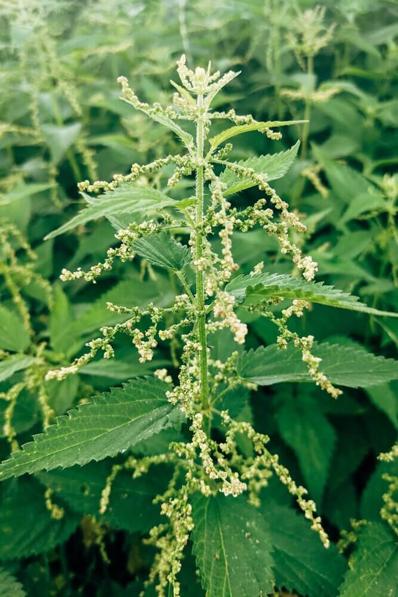
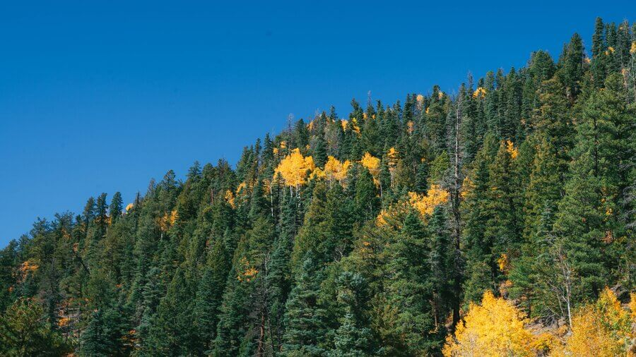
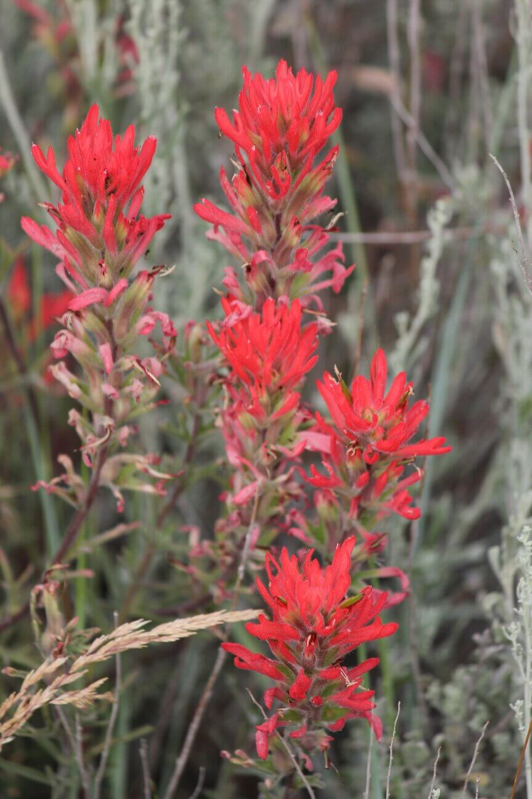

Flora
Stinging Nettle:
A widespread plant with small stinging hairs on its stems and leaves. Gives an itching, burning sensation and inflammation when touched. Their leaves have many serrations at their edge, and the leaves grow in pairs, one on opposite sides of the stem.
Lodgepole Pine:
A conifer that is not common in most of Wyoming. It can be found in places such as Yellowstone and of course Star Valley. Strangely, these trees are fire-dependent species meaning they grow best after a forest fire. While other tree populations tend to struggle after a fire, the Lodgepole populations have a net increase because of the fire.
Giant Red Indian Paintbrush:
A rare wildflower to find in Wyoming but easily recognizable. They grow a little over 2 feet tall and have green leaves, purple stems, and red flowers. These plants are parasitic to other plants and form many connections via their roots. Due to this, they cannot be transplanted. These plants are also the source of defensive compounds that some insect larvae can extract and use it as a deterrent for predators.
